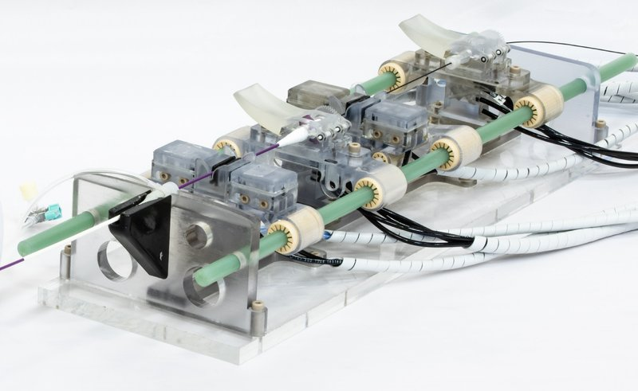

Academic bedside robots · cathbot_kundrat2021
CathBot
CathBot (MR-safe platform)

1 / 9


- Family
- Academic bedside robots (academic)
- Devices
- one catheter and one guidewire, one at a time (not simultaneously); standard instruments, plug-and-play carriers
- Degrees of freedom
- 6 per Kundrat Sec. II-C (three actuated axes per instrument); 4 per LegoBot Table I
- Push
- Clamp relay
- Twist
- Other
- Tested up to
- Animal
- Sim-to-real
- None found — No simulation-trained controller found for this robot.
Testing
- Highest level
- Animal
- What was tested
- 4 pigs, 5 target arteries, cannulation and balloon angioplasty, robot vs manual; earlier phantom user study with 7 vascular surgeons/registrars
- Key numbers
- success 100% both; completion 35+-14 min robot vs 15+-6 min manual (p=0.03); fluoroscopy 7+-5 vs 2+-1 min; feed 7-10 mm/s, max 30 mm/s; actuator latency 10-15 ms; clamp holding force 10.2 N (calc.)
Mechanism
- Push (translation)
- clamp-relay (pneumatic clamps with pneumatic stepper drivers, regripping; single stroke 20 mm per review Table IV)
- Twist (rotation)
- pneumatic rotary stepper (0.3 mm and 10 deg steps)
- Device range
- N.R. (supplement not opened); 6 Fr sheath in the pig study
- Target anatomy
- renal, mesenteric, iliac and carotid arteries (pig); thoracic/abdominal phantoms
Sensing and interface
- Force sensing
- none on follower; haptics rendered from image-derived tip-to-wall distance
- Leader and haptics
- yes: handle with linear and rotary motors renders viscous force/torque; virtual fixtures slow the follower near the wall
- Imaging
- MR-Safe (ASTM F2503 class); used under fluoroscopy
- Sterility
- single-use concept; instrument carriers detachable
Size
- Footprint (mm)
- 520 x 140 x 120 (follower); leader 191 x 111 x 85
- Mass (kg)
- N.R.
Simulation
- Simulation model
- none found for the robot (Kundrat/Dagnino texts)
- Sim-trained controller
- none found (Hamlyn learning-from-demonstration studies listed by search, e.g. Chi ICRA 2020, were not matched to CathBot hardware)
- Studies on this robot
- 2024 · CathSim: An Open-Source Simulator for Endovascular Intervention — sim n/a; robot n/a
- 2025 · A simulation environment for robot-assisted endovascular interventions — sim n/a; robot n/a
Versions
- Lineage
- 2018 haptic active constraints (Dagnino IROS); 2021 MR-safe platform (Kundrat TBME); 2023 in-vivo platform (Dagnino TBME)
Sources
- An MR-Safe Endovascular Robotic Platform: Design, Control, and Ex-Vivo Evaluation · IEEE Transactions on Biomedical Engineering, 2021 · doi:10.1109/tbme.2021.3065146 [kundrat2021_mr]
- In-Vivo Validation of a Novel Robotic Platform for Endovascular Intervention · IEEE Transactions on Biomedical Engineering, 2023 · doi:10.1109/tbme.2022.3227734 [dagnino2023_in]
- Haptic Feedback and Dynamic Active Constraints for Robot-Assisted Endovascular Catheterization · 2018 IEEE/RSJ International Conference on Intelligent Robots and Systems (IROS), 2018 · doi:10.1109/iros.2018.8593628 [dagnino2018_haptic]
- Endovascular robotics: technical advances and future directions · Minimally Invasive Therapy & Allied Technologies, 2025 · doi:10.1080/13645706.2025.2454237 [pescio2025_endovascular]
Notes
- Notes
- LegoBot Table I lists ICL as 190x90x64 mm, clamp-based linear, 20 mm single stroke; Kundrat gives 520x140x120 mm. Row id keeps the proposed name.
This record
- Read level
- full — full (kundrat2021_mr, dagnino2023_in); numbers also from
- Picture
- abdelaziz2019_versatile Fig. 1, right part (MR-safe slave robot, studio photo; embedded image 3396x1600 on p1) ↗ — licence: publisher copyright (IEEE); grade A
- Picture changes
- native extract; cropped to the slave robot (master device on the left excluded); no erasing; not upscaled
- Found by
- academic: Search of academic bedside robots.
- Data
- JSON · YAML:
records/robots/cathbot_kundrat2021.yaml - Correction
- Suggest a correction [repository not created yet]